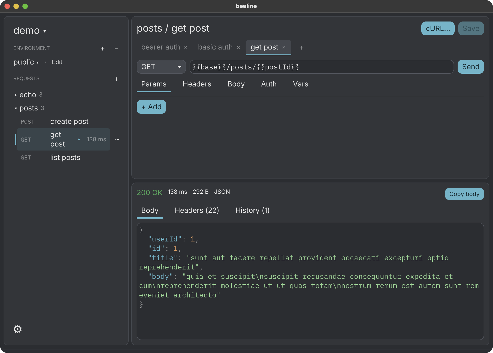
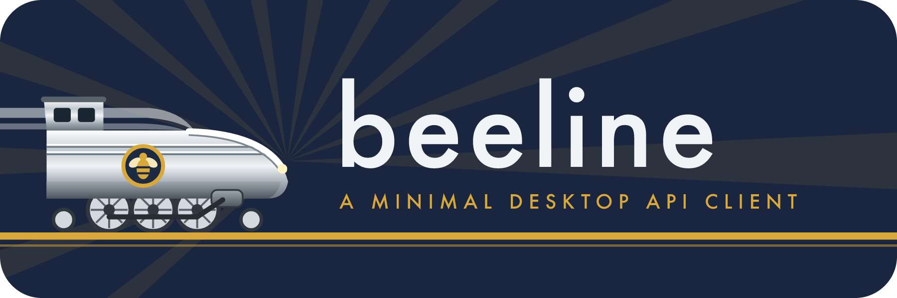

A small, fast desktop API client. Collections are folders of JSON files you can diff and keep in git.

Each request is one JSON file, and its name is the file name. Read it, hand-edit it, and review it in a pull request like any other code.
my-api/
environments/
dev.json
users/
list users.json
create user.json
health.json
{
"method": "POST",
"url": "{{base}}/users?notify=true",
"headers": [{ "key": "Accept", "value": "application/json" }],
"body": { "type": "json", "text": "{\"name\": \"bee\"}" },
"auth": { "type": "bearer", "token": "{{token}}" }
}
users/create user.json. Every field is optional.Nothing it does not: no scripting, no plugins, no cloud.
Method, URL, params kept in sync with the URL, headers, JSON, text or form bodies, and bearer or basic auth. Keep several requests open in tabs. Put variables in environments/<name>.json and use them anywhere.
Bring requests in from other tools.
Status, time, size and headers. JSON is pretty-printed in server key order, with colours. Each tab keeps its last 20 sends.
See the exact command for a request.
curl -X POST 'https://api.example.com/users'
No account, no cloud sync and no telemetry.

On Linux and Windows, use Ctrl instead of ⌘.
Send the request
Save
New tab
Close tab
New request
.dmg from the latest release.xattr -dr com.apple.quarantine /Applications/beeline.app
The release has a Linux .tar.gz and a Windows .zip. To build it yourself, you need Rust from rustup.
git clone https://github.com/zpeters/beeline cd beeline cargo run --release